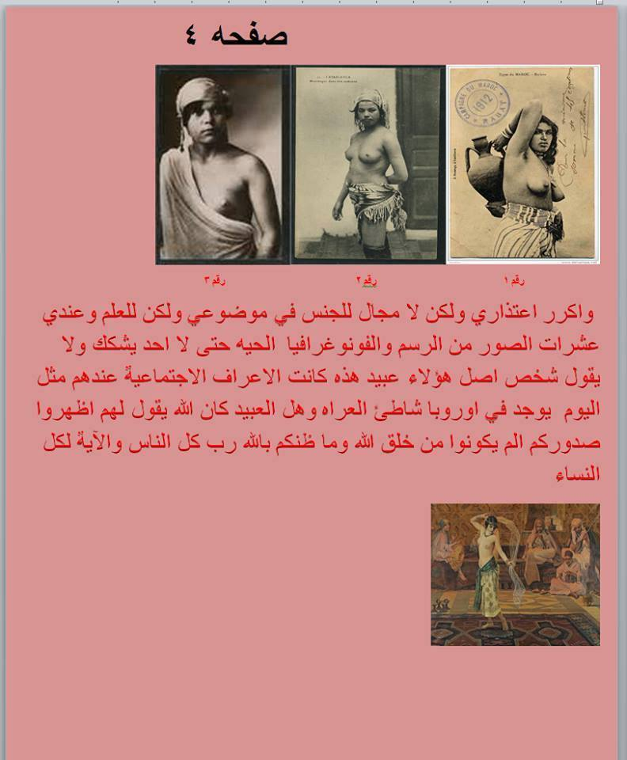
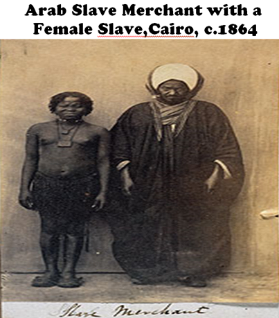

Slave Bazaars in Saudi Arab in 1964, with slave girls with naked breasts
Although Saudi Arabia had to ban slavery in 1962 due to the pressure of the Western world, still unofficially it continued. This documentary was made in 1964 where you can see slave girls with naked breasts are sold.
But how is it possible?
The answer is:
- The Hijab has nothing to do with modesty, as Islam prohibited Slave Women from wearing the Hijab or even covering their naked breasts in public.
- According to Islam, the Hijab was considered a privilege and honor exclusively for free Muslim women, while slave women were not allowed to wear it.
- Umar Ibn Khattab used to beat slave women if they ever by mistake wore the Hijab, and told them not to resemble free Muslim women by wearing the Hijab.
- Additionally, it is worth noting that Muhammad specified that the 'Awrah (nakedness) of slave women should be from the navel to the knee, while their chests remained uncovered. This meant that there were thousands of slave women who appeared publicly, even in the presence of Muhammad, with their breasts exposed.
Understanding these historical facts about Islam could lead Muslim women today to reconsider the necessity of wearing the Hijab.
Table of Contents:
- Muhammad revived the old custom of Arabia, where only high-status women were allowed to take a Hijab
- In the pre-Islamic era, neither free nor slave women used to cover their breasts
- The Quranic Verse makes clear that Hijab was only for free Muslim women against slave women
- Hijab has nothing to do with modesty, but it is this respect and acknowledgement of women's autonomy that truly embodies the concept of modesty
- Role of Umar Ibn Khattab
- Umar Ibn Khattab, the second Caliph, used to beat the slave women with a stick if they ever attempted to take Hijab (Jilbab)
- Looking and touching the private parts of half-naked slave women in the Islamic Bazaars of slavery
- All four Sunni Imams are unanimous that the nakedness (Awrah عورۃ) of a slave woman is from the navel to the knee
- Traditions about the 'Awrah (i.e. nakedness) of a slave woman:
- Slave women were standing in the mosques with naked breasts, during prayers
- The Video of Naked Slave Girls in Saudi Arabia in 1964
- Some Original Photos of half-naked Muslim slave women
- The Hijab is not a CHOICE, but Women must be veiled outside the house in Islam
- Prophet Muhammad used to roam around the city in public while holding the hands of the slave girls who belonged to other men
- 'Aisha bathed in front of two Mahram MEN, while the nakedness of a woman in front of Mahram man is also just like the nakedness of a slave woman
- Excuses by Islamic apologists:
- The Dishonest Translation of verse 24:31 by modern Islamic apologists to prove that Khimar was also used to cover the naked breasts of slave women
- Islamic Preachers: Hijab is necessary for a woman so that her husband does not feel jealous and uncomfortable due to his Ghayrah (Arabic: غَيْرَة)
- 'Lowering the gazes' is only an Unnatural restriction, which results only in 'sexual frustration':
- Islamic Apologists: Slave women were allowed to expose their chest/breasts, but it was not necessary
- Ibn Taymiyyah claimed that 'Awrah of slave women is like that of free Muslim women
- An Excellent Video by Sharif Gaber on the Hijab
- The History of Arab Slave Trade:
Muhammad revived the old custom of Arabia, where only high-status women were allowed to wear the Hijab
In pre-Islamic Arabia, there existed a cultural practice where high-status women were required to wear veils as a symbol of "honor," while prostitutes and slave women were not allowed to veil themselves.
https://en.wikipedia.org/wiki/Hijab#History
Elite women in ancient Mesopotamia and in the Byzantine, Greek, and Persian empires wore the veil as a sign of respectability and high status.[74] In ancient Mesopotamia, Assyria had explicit sumptuary laws detailing which women must veil and which women must not, depending upon the woman's class, rank, and occupation in society.[74] Female slaves and prostitutes were forbidden to veil and faced harsh penalties if they did so.[7] Veiling was thus not only a marker of aristocratic rank, but also served to "differentiate between 'respectable' women and those who were publicly available".[7][74]
Muhammad did not introduce the Islamic hijab with the intention of promoting modesty, but rather he adopted the prevailing practices of the pre-Islamic Arabs. His aim was to distinguish free Muslim women from slave women through the implementation of hijab.
In the pre-Islamic era, neither free nor slave women used to cover their breasts
During the pre-Islamic era, it was customary for women, both free and slave, in various cultures around the world, including pre-Islamic Arab society, to not cover their chests.
Tafsir Ibn Kathir (link) and in Tafsir Durr-e-Manthur (link), under the commentary of verse 24:31, it is written:
أن جابر بن عبد الله الأنصاري حدث أن أسماء بنت مرشدة كانت في محل لها في بني حارثة، فجعل النساء يدخلن عليها غير متأزرات، فيبدو ما في أرجلهن من الخلاخل، وتبدو صدورهن وذوائبهن، فقالت أسماء ما أقبح هذا فأنزل الله تعالى الآية۔۔۔ وقوله تعالى { وَلْيَضْرِبْنَ بِخُمُرِهِنَّ عَلَىٰ جُيُوبِهِنَّ } يعني المقانع يعمل لها صنفات ضاربات على صدورهن لتواري ما تحتها من صدرها وترائبها ليخالفن شعار نساء أهل الجاهلية فإنهن لم يكن يفعلن ذلك، بل كانت المرأة منهن تمر بين الرجال مسفحة بصدرها، لا يواريه شيء، وربما أظهرت عنقها وذوائب شعرها وأقرطة آذانهاJabir ibn Abdullah al-Ansari narrated that Asma bint Marwan had a place for herself in Bani Haritha, and women would visit her without wearing veils. Their ankles would be visible, along with their chests and necklines. Asma expressed her disapproval of this, and as a result, Allah revealed the verse: "...And let them draw their coverings over their chests" [Quran 24:31], meaning they should cast their outer garments in a way that it covers their chests, concealing what is beneath them. This was in contrast to the practices of the women of the pre-Islamic era (jahiliyyah), as they did not observe such covering. Instead, women would pass by men with their chests exposed, revealing their necks, hair, and earrings.
What Muhammad did was to ask free Muslim women to wear the Hijab, but he PROHIBITED slave women to wear the Hijab.
Therefore, even after the verse of the Hijab, there were thousands of slave women present in front of Muhammad and in public with naked breasts. And it stayed the same way during the 1300 years long history of Islamic Slavery.
The Quranic Verse makes clear that Hijab was only for free Muslim women against slave women
Quran 33:59:
يَٰٓأَيُّهَا ٱلنَّبِىُّ قُل لِّأَزْوَٰجِكَ وَبَنَاتِكَ وَنِسَآءِ ٱلْمُؤْمِنِينَ يُدْنِينَ عَلَيْهِنَّ مِن جَلَٰبِيبِهِنَّ ۚ ذَٰلِكَ أَدْنَىٰٓ أَن يُعْرَفْنَ فَلَا يُؤْذَيْنَ ۗ وَكَانَ ٱللَّهُ غَفُورًا رَّحِيمًا
O Prophet! say to your wives and your daughters and the women of the believers that they let down upon them their over-garments (Arabic: Jilbab); this will be more proper, so that they may be recognized (as free Women) and not annoyed/molested.
According to the consensus of Muslim Quran commentators, it is widely documented that this particular verse was revealed in response to a specific incident in Medina. During that time, people would gather and sit on the sides of the streets, subjecting passing women to harassment and molestation. However, upon the revelation of this verse, the harassment of free women ceased as they started wearing the hijab, which distinguished them from slave girls who did not wear hijab. Unfortunately, the molestation of slave girls persisted, as their lack of hijab served as a recognizable marker of their status as slaves.
Tafsir Ibn Kathir, Commentary of Verse 33:59 (link):
يقول تعالى آمراً رسوله صلى الله عليه وسلم تسليماً أن يأمر النساء المؤمنات ــــ خاصة أزواجه وبناته لشرفهن ــــ بأن يدنين عليهن من جلابيبهن ليتميزن عن سمات نساء الجاهلية وسمات الإماء ... قال السدي في قوله تعالى { يٰأَيُّهَا ٱلنَّبِيُّ قُل لأَزْوَاجِكَ وَبَنَاتِكَ وَنِسَآءِ ٱلْمُؤْمِنِينَ يُدْنِينَ عَلَيْهِنَّ مِن جَلاَبِيبِهِنَّ ذٰلِكَ أَدْنَىٰ أَن يُعْرَفْنَ فَلاَ يُؤْذَيْنَ } قال كان ناس من فساق أهل المدينة يخرجون بالليل حين يختلظ الظلام إلى طرق المدينة يتعرضون للنساء، وكانت مساكن أهل المدينة ضيقة، فإذا كان الليل، خرج النساء إلى الطرق يقضين حاجتهن، فكان أولئك الفساق يبتغون ذلك منهن، فإذا رأوا المرأة عليها جلباب، قالوا هذه حرة، فكفوا عنها، وإذا رأوا المرأة ليس عليها جلباب، قالوا هذه أمة، فوثبوا عليها، وقال مجاهد يتجلببن فيعلم أنهن حرائر، فلا يتعرض لهن فاسق بأذى ولا ريبة.
Translation:
... (In this verse, Allah ordered the free women) to draw their Jilbabs over their bodies, so that they will be distinct in their appearance from the women of the Jahiliyyah and from slave women ...
And As-Suddi said about the revelation of this verse 33:59 that the mischief-mongers among the people of Madīnah would come out on the streets at dusk and get after the women. The houses of the people of Madīnah [in those days] were very small in size and at nightfall the women would go out on these streets [making their way to the fields] to relieve themselves. These evil people would tease and molest these women. While if they saw a woman who would be wearing a Jilbab (cloak/outer garment), they would say she is a free woman [and not a slave] and would abstain [from molesting her] and if they saw a woman who would not be wearing a cloak, they would molest her by saying that she is a slave woman.
And Mujahid said that those women would wear cloaks [in the way prescribed by the Qur'ān] so that it be known that they are free women and the mischief-mongers would not then harm or molest them.
Abu Saleh said (Tafsir-e-Tabari, Verse 33:59):
حدثنا ابن حميد، قال: ثنا حكام، عن عنبسة، عمن حدثه، عن أبـي صالـح، قال: قدم النبـيّ صلى الله عليه وسلم الـمدينة علـى غير منزل، فكان نساء النبـيّ صلى الله عليه وسلم وغيرهنّ إذا كان اللـيـل خرجن يقضين حوائجهنّ، وكان رجال يجلسون علـى الطريق للغزل، فأنزل الله: { يا أيُّها النَّبِـيُّ قُلْ لأَزْوَاجِكَ وَبَناتِكَ وَنِساءِ الـمُؤْمِنِـينَ يُدْنِـينَ عَلَـيْهِنَّ مِنْ جَلابِـيبِهِنَّ } يقنعن بـالـجلبـاب حتـى تعرف الأمة من الـحرّة.
Abu Saleh narrated: When the holy prophet came to Medina, he had no house in Medina. He and his wives and other women used to go outside at evening to relieve themselves. And men used to sit on the streets and used to recite poetry (to tease and molest the women). Upon that Allah revealed the verse of Hijab (33:59) so that free women could be differentiated from the slave women.
— Tafsir Abd al-Razzaq al-Sanani (d. 211 AH/826 CE) (link):
عبد الرزاق عن معمر عن الحسن قال كن إماء بالمدينة يقال لهن كذا وكذا كن يخرجن فيتعرض لهن السفهاء فيؤذوهن لأنه فكانت المرأة الحرة تخرج فيحسبون أنها أمة فيتعرضون لها ويؤذونها أخبرنا فأمر النبي صلى الله عليه وسلم المؤمنات أن يدنين عليهن من جلابيبهن ذلك أدنى أن يعرفن من الإماء أنهن حرائر فلا يؤذين
Translation:
Al-Hassan al-Basri (died 110 Hijri year) said: Slave women in Medina used to be called with specific names (i.e. they were molested) when they went outside. One day, some ignorant people approach women and harm them, thinking they were slave women. This was because free women would also go out, and they would be mistaken for slave women, and people would approach them and cause harm. The Prophet (peace be upon him) then commanded the believing women to bring their outer garments closer to them (i.e. to take the Hijab). This was to ensure that they would be recognized as free women and not be harmed."
Tafsir Ibn Jarir, verse 33:59 (link):
حدثنـي مـحمد بن سعد، قال: ثنـي أبـي، قال: ثنـي عمي، قال: ثنـي أبـي، عن أبـيه، عن ابن عبـاس، قوله: { يا أيُّها النَّبِـيُّ قُلْ لأَزْوَاجِكَ وَبَناتِكَ وَنِساءِ الـمُؤْمِنِـينَ يُدْنِـينَ عَلَـيْهِنَّ مِنْ جَلابِـيبِهِنَّ }.... إلـى قوله: { وكانَ اللَّهُ غَفُوراً رَحِيـماً } قال: كانت الـحرّة تلبس لبـاس الأمة، فأمر الله نساء الـمؤمنـين أن يدنـين علـيهنّ من جلابـيبهنّ ، وأدنى الجلباب: أن تقنع، وتشده على جبينها.
Ibn Abbas said about the verse 33:59, the free (Muslim) women used to dress same as the slave women. Upon that Allah ordered them that they let down upon them their over-garments (Arabic: Jilbab), and letting the outer-garment means to cover their faces and to tie it on their foreheads.
From Mujahid (link):
عن مـجاهد، قوله: { يُدْنِـينَ عَلَـيْهِنَّ مِنْ جَلابِـيبِهِنَّ } يتـجلببن فـيُعلـم أنهنّ حوائر فلا يعرض لهنّ فـاسق بأذى من قول ولا ريبة.
According to Mujahid, regarding the phrase "to bring their outer garments closer to them" (Quran 33:59), it means that they should wear veils that clearly indicate they are free women, so that no immoral person would harm them or have any doubt about their status.
Ibn Kathir also wrote in his commentary under verse 24:31 of Surah Nur (link):
هذا أمر من الله تعالى للنساء المؤمنات، وغيرة منه لأزواجهن عباده المؤمنين، وتمييز لهن عن صفة نساء الجاهلية وفعال المشركات. وكان سبب نزول هذه الآية ما ذكره مقاتل بن حيان قال بلغنا ــــ والله أعلم ــــ أن جابر بن عبد الله الأنصاري حدث أن أسماء بنت مرشدة كانت في محل لها في بني حارثة، فجعل النساء يدخلن عليها غير متأزرات، فيبدو ما في أرجلهن من الخلاخل، وتبدو صدورهن وذوائبهن، فقالت أسماء ما أقبح هذا فأنزل الله تعالى { وَقُل لِّلْمُؤْمِنَـٰتِ يَغْضُضْنَ مِنْ أَبْصَـٰرِهِنَّ }
This is a command (i.e. veiling) from Allah Almighty to the believing women, as a protection for their honor and a distinction from the characteristics of women in the pre-Islamic era and the practices of pagan women. The reason behind the revelation of this verse, as mentioned by Muqatil ibn Hayyan, is that Jabir ibn Abdullah al-Ansari reported that Asma bint Marwan had a designated place in Bani Haritha, where women would visit her without wearing veils. Thus, their ankles would be exposed, along with their chests and ornaments. Upon seeing this, Asma expressed her disapproval. As a result, Allah Almighty revealed the verse: "And tell the believing women to reduce [some] of their vision [i.e., to look down and not to expose their adornment]..." (Quran 24:31).
Names of 12 Sahaba (companions) and Tabaeen (successors) who reported it are:
- ٰIbn Abbas (ابن عبـاس): Tafsir Ibn Jarir
- Suddi ( السدي): Tafsir Ibn Kathir
- Abu Malik ( أبي مالك): Tafsir Durr-e-Manthur
- Abu Saleh (أبي صالح)ٰ: Tafsir Ibn Jarir
- Ibn Shahab (ابن شهاب): Tafsir Durr-e-Manthur
- Qatadah (قتادة): Tafsir Ibn Jarir
- 'Aisha (عائشة)ََ: Tafsir Durr-eManthur
- Kalbi (الكلبي): Tafsir Durr-e-Manthur
- Muawiyyah bin Qurrah (معاوية بن قرة): Tafsir Durr-e-Manthur
- Hasan (حسن): Tafsir Durr-e-Manthur
- Mujahid (مجاهد): Tafsir Ibn Jarir
- Muhammad bin Ka'b al-Qarzi (محمد بن كعب القرظي): Tafsir Durr-e-Manthur
Note:
Islamic preachers often assert that those individuals who engaged in harassment and molestation of women while sitting on the sides of the streets were hypocrites. However, this claim is contested by some who argue that they were not hypocrites but rather companions of Muhammad (Sahaba).
These individuals, who engaged in harassment and molestation, were not addressed as hypocrites in the Quran. Surprisingly, the Quran neither issued warnings nor threats against them, let alone punishments. Instead, the Quran seemingly allowed them to continue their misconduct towards slave women, while providing protection only to free women through the requirement of hijab.
This portrayal of events raises concerns, as it appears that the Quran provided no safeguards for the well-being of slave women, inadvertently granting these individuals a "license" to persist in their mistreatment of vulnerable slave girls.
Hijab has nothing to do with modesty, but it is this respect and acknowledgement of women's autonomy that truly embodies the concept of modesty
Regrettably, a significant majority of ordinary Muslims today remain unaware of the historical realities and complexities surrounding hijab and its relation to Islam. This truth often comes as a surprise to them, as many Islamic preachers strive to conceal or downplay these aspects.
It is common for some Muslims to assert that women must wear hijab in order to prevent men from experiencing lustful desires, using the analogy that an uncovered candy attracts flies. However, it is important to recognize that this viewpoint oversimplifies the multifaceted reasons and interpretations associated with hijab within the Islamic tradition.
Please see, it was Islam which compelled thousands of slave women to move in public without a Hijab (i.e. without a wrapper). So, the question is, did Islam thus make Sahaba sexually aroused and did Sahaba rape those slave women for having naked breasts in public?
Reality:
- Hijab has nothing to do with modesty, but modesty is truly defined by the respect for women and their autonomy to make choices about their lives.
- The Western world, with its emphasis on upholding women's rights and their choices, is a true example of modesty and decency. Yes, the situation on ground is not 100% perfect, but their laws and education go in the right direction.
- Hijab is not modesty, but for 14 prolonged centuries, it has been a distressing symbol of severe discrimination against impoverished slave women.
Role of Umar Ibn Khattab in revelation of the Hijab Ruling
It is known that Muhammad faced challenges when it came to rejecting Umar's desires and suggestions. Throughout Muhammad's life, there were instances where Umar made wishes or suggestions, and Muhammad later claimed to receive revelations in alignment with those desires.
This pattern is observed in the context of veiling women as well. It appears that Umar Ibn Khattab played a significant role in advocating for the veiling of free Muslim women, as he engaged in multiple discussions with Muhammad on the matter (Sahih Bukhari, Hadith 146).
Subsequently, following the unfortunate incident of women being molested in Medina, Muhammad claimed that the verses regarding veiling were revealed in accordance with Umar's desires.
However, it is worth noting that Umar held more extreme views on this matter. It appears that he was not content with the ruling of veiling for women and sought something beyond that. This becomes apparent through an incident involving Umar and Sawda, one of Muhammad's wives, which took place after the revelation of the hijab verses
Narrated Aisha: Sauda (the wife of the Prophet) went out to answer the call of nature after it was made obligatory (for all the Muslims ladies) to observe the veil. She had a large frame and everybody who knew her before could recognize her. So `Umar bin Al-Khattab saw her and said, "O Sauda! By Allah, you cannot hide yourself from us, so think of a way by which you should not be recognized on going out. Sauda returned while Allah's Messenger (ﷺ) was in my house taking his supper and a bone covered with meat was in his hand. She entered and said, "O Allah's Messenger (ﷺ)! I went out to answer the call of nature and `Umar said to me so-and-so." Then Allah inspired him (the Prophet) and when the state of inspiration was over and the bone was still in his hand as he had not put in down, he said (to Sauda), "You (women) have been allowed to go out for your needs."
To those who advocate for Umar's stance, one might question the following:
Why should Sawda, or any woman for that matter, bear the burden of constantly finding new ways to conceal herself and endure the added restrictions? What harm would it have caused if people still recognized her when she ventured outside?
Interestingly, while Umar expressed dissatisfaction with Hafsa's veiling, he paradoxically resorted to physically disciplining slave women for attempting to wear hijab by beating them with a stick. Furthermore, he even stripped them of their jilbab (outer garment sheet), as we will explore further in this article.
An excuse by Islamic preachers: But the verse of Hijab 33:59 was revealed during the incident of 'Umar and Sawda
It is impossible for Islamic preachers to accept the notion that companions used to molest women, which led to the revelation of the Hijab verse. This realization raises questions about the entire religion of Islam and creates doubts in the minds of every person who learns about it. Therefore, they attempt to use alternative traditions and argue that the verse of the Hijab was not revealed due to the molestation of women by companions, but rather during an incident involving Umar and Sawda.
عَنْ عَائِشَةَ، أَنَّ أَزْوَاجَ النَّبِيِّ، صلى الله عليه وسلم كُنَّ يَخْرُجْنَ بِاللَّيْلِ إِذَا تَبَرَّزْنَ إِلَى الْمَنَاصِعِ ـ وَهُوَ صَعِيدٌ أَفْيَحُ ـ فَكَانَ عُمَرُ يَقُولُ لِلنَّبِيِّ صلى الله عليه وسلم احْجُبْ نِسَاءَكَ. فَلَمْ يَكُنْ رَسُولُ اللَّهِ صلى الله عليه وسلم يَفْعَلُ، فَخَرَجَتْ سَوْدَةُ بِنْتُ زَمْعَةَ زَوْجُ النَّبِيِّ صلى الله عليه وسلم لَيْلَةً مِنَ اللَّيَالِي عِشَاءً، وَكَانَتِ امْرَأَةً طَوِيلَةً، فَنَادَاهَا عُمَرُ أَلاَ قَدْ عَرَفْنَاكِ يَا سَوْدَةُ. حِرْصًا عَلَى أَنْ يَنْزِلَ الْحِجَابُ، فَأَنْزَلَ اللَّهُ آيَةَ الْحِجَابِ.
Narrated `Aisha: The wives of the Prophet (ﷺ) used to go to Al-Manasi, a vast open place (near Baqi` at Medina) to answer the call of nature at night. `Umar used to say to the Prophet (ﷺ) "Let your wives be veiled," but Allah's Apostle did not do so. One night Sauda bint Zam`a the wife of the Prophet (ﷺ) went out at `Isha' time and she was a tall lady. `Umar addressed her and said, "I have recognized (Arabic: عَرَفْنَاكِ) you, O Sauda." He said so, as he desired eagerly that the verses of Al-Hijab (the observing of veils by the Muslim women) may be revealed. So Allah revealed the verses of "Al-Hijab".
Response:
Firstly, it is clear that any sub-narrator of this tradition made a mistake, while another tradition in Sahih Bukhari (which we have already mentioned above) is also from 'Aisha, where she clearly stated that this incident of 'Umar and Sawda occurred after the verse of Hijab had already been revealed.
Narrated Aisha: Sauda (the wife of the Prophet) went out to answer the call of nature after it was made obligatory (for all the Muslims ladies) to observe the veil. She had a large frame and everybody who knew her before could recognize her. So `Umar bin Al-Khattab saw her and said, "O Sauda! By Allah, you cannot hide yourself from us, so think of a way by which you should not be recognized on going out. ....
Secondly, it is also clear from both traditions that Sawda was indeed wearing the hijab (jilbab), and Umar did not recognize her because of her face, but only because of her tall stature (i.e., Sawda was a tall woman with a large frame). This proves that the verse of hijab (33:59) had already been revealed before the incident involving Umar and Sawda.
Thirdly, the verse of hijab (33:59) itself contradicts the notion that it was revealed during the incident involving Umar and Sawda. There are two significant facts that support this claim.
- Firstly, by taking jilbab (cloaks), women cannot be recognized while their faces are covered. Nobody knows which woman is actually inside the cloak. However, the Quran says: "(the women) should take jilbab (cloaks) so that they can be recognized..." (Arabic: يعرفن). Why does the Quran say the opposite, that they can be recognized by using cloaks? The answer lies in the fact that the Quran refers to recognizing in the sense of distinguishing between slave women and free Muslim women. Hence, this part of the verse itself proves that it was not revealed about the incident of Umar/Sawda.
- Secondly, this verse also claims: "... and (these women are) not molested." Ask these Islamic preachers if Umar ibn Khattab was molesting Sawda. The answer is no. It was not Umar ibn Khattab who molested Sawda, but rather the people who were sitting on the streets, who were molesting the women of Medina. Therefore, this serves as further evidence that the hijab verse (33:59) is unrelated to the incident involving Umar and Sawda. Instead, it stands as a testimony that this verse was indeed revealed about the incident when companions were molesting the women.
Umar Ibn Khattab, the second Caliph, used to beat the slave women with a stick if they ever attempted to take Hijab (Jilbab)
According to authentic traditions, Umar Ibn Khattab used to beat those slave girls with a stick, who ever attempted to hide their naked bodies by taking Jilbab. He used to tell those slave girls not to try to become equal in status with the free Muslim women by taking Jilbab/Muqna (Jilbab and Muqna, both are outer garments, used for Hijab) .
Saudi grand hadith master Sheikh Albani recorded this authentic tradition (link):
حدثنا وكيع قال : حدثنا شعبة عن قتادة عن أنس قال : " رأى عمر أمة لنا مقنعة فضربها وقال : لا تشبهين بالحرائر " . قلت : وهذا إسناد صحيح
Companion Anas reported: "Umar saw one of our slave girls covering herself with Muqna (which is an outer garment like Jilbab and was used to cover the breasts and body), so he struck her and said, 'Do not resemble the free women.
I (i.e. Sheikh Albani) say: 'And this chain of narration is authentic.'
This same tradition is also narrated by Ibn Qalabah (link).
Abdur Razzak (d 211 Hijri year) recorded this narration (link):
عبد الرزاق عن معمر عن أيوب عن نافع أن عمر رأى جارية خرجت من بيت حفصة متزينة عليها جلباب أو من بيت بعض أزواج النبي صلى الله عليه و سلم فدخل عمر البيت فقال من هذه الجارية فقالوا أمة لنا – أو قالوا أمة لآل فلان – فتغيظ عليهم وقال أتخرجون إماءكم بزينتها تفتنون الناس
Umar once saw a young girl leaving the house of Hafsa (his daughter), adorned with a cloak (i.e. Jilbab) — or, from one of the houses of the Prophet’s wives. Umar entered the house and said, “Who is this girl?” They said, “A slave of ours” — or, a slave of someone’s family. He became enraged at them and said, “Your slave girls left with their adornment, and created discord (by taking Jilbab) amongst the people (while they were unable to distinguish her from the free Muslim women).”
And Saudi grand hadith master Sheikh Albani recorded this tradition (link):
حدثنا على بن مسهر عن المختار بن فلفل عن أنس بن مالك قال: " دخلت على عمر بن الخطاب أمة قد كان يعرفها لبعض المهاجرين أو الأنصار , وعليها جلباب متقنعة به , فسألها: عتقت؟ قالت: لا: قال: فما بال الجلباب؟! ضعيه عن رأسك , إنما الجلباب على الحرائر من نساء المؤمنين , فتلكأت , فقام إليها بالدرة , فضرب بها رأسها حتى ألقته عن رأسها ".
قلت: وهذا سند صحيح على شرط مسلم.
Anas bin Malik said: "I entered upon Umar bin Al-Khattab with a female slave that he knew, either from the Muhajireen or the Ansar, and she was wearing a well-adorned cloak (i.e. Jilbab, which was used to cover her breasts and body with it). He asked her, 'Have you been set free?' She replied, 'No.' He then said, 'What is with the cloak?' 'Take it off your head. The cloak is only for the free women among the believers.' She hesitated, so he got up and took it off her head forcefully, hitting her with a whip until he removed it from her head."
I (i.e. Sheikh Albani) say, "And this chain is authentic according to the conditions of Muslim.
Imam Ibn Abi Shayba also recorded this tradition (link):
حَدَّثَنَا هُشَيْمٌ ، عَنْ خَالِدٍ ، عَنْ أَبِي قِلَابَةَ ، قَالَ : كَانَ عُمَرُ بْنُ الْخَطَّابِ لَا يَدْعُ فِي خِلَافَتِهِ أَمَةً تَقَنَّعُ ، قَالَ : قَالَ عُمَرُ : إِنَّمَا الْقِنَاعُ لِلْحَرَائِرِ لَكَيْلَا لَا يُؤْذَيْنَ
Narrated to us Hushaym, from Khalid, from Abu Qilaba, who said: "Umar ibn al-Khattab, during his caliphate, did not leave any slave girl who could cover herself. He said: 'Covering oneself is only for free (Muslim/Believing) women, so they may not be harmed (i.e. people can differentiate them with slave women and don't harm the free Muslim women).'"
The traditions related to Umar Ibn Khattab further corroborate the twelve traditions that highlight the revelation of the hijab verse (33:59) as a means to distinguish between slave women and free Muslim women. These traditions collectively provide supporting evidence for this understanding of the verse's purpose.
It is interesting to see that such punishments were also present in the ancient Assyrian law for resembling free women:
https://en.wikipedia.org/wiki/Assyrian_law
17 "If the wives of a man, or the daughters of a man go out into the street, their heads are to be veiled. The prostitute is not to be veiled. Maidservants are not to veil themselves. Veiled harlots and maidservants shall have their garments seized and 50 blows inflicted on them and bitumen poured on their heads."
Please also note the difference between "Jilbab" and "Khimar":
-
A Jilbab (or Muqna) was a large outer garment/sheet that was placed on the head, draped around the body, and completely covered the breasts and body of the woman. In the verse of Hijab (Quran 33:59), the author of the Quran instructed free Muslim women to use the same Jilbab to cover their breasts and bodies. Meanwhile, slave women were not permitted to use Jilbab to cover their breasts and bodies. According to traditions, Umar Ibn Khattab removed the Jilbab from the heads of slave women, exposing their bare breasts once again.
-
In contrast, "Khimar (Arabic: خمار)" refers to a small headscarf that covers only the head and extends up to the shoulders. Today, we can see Arab men wearing this Khimar (Arabic headscarf).
أَنَّ رَسُولَ اللَّهِ صلى الله عليه وسلم مَسَحَ عَلَى الْخُفَّيْنِ وَالْخِمَارِ
Messenger of Allah (ﷺ) wiped over the socks and Khimar (Arabic Head Scarf)
Slave women were allowed to cover their head and hair by wearing Khimaar خمأر. Covering the head was a per-Islamic tradition due to the heat in Arab area.
And 'Abdul Razzaq recorded in this book al-Musanif (link):
عبد الرزاق عن بن جريج قال بلغني عن أشياخ من أهل المدينة أن الخمر على الإماء إذا حضن وليس عليهن الجلابيب
Abd al-Razzaq narrated from Ibn Jarir who said: "I heard from the elders of Medina that when a slave girt started to menstruate, she would cover her head with Khimar, but not wear a Jilbab."
Thus, Khimar was not the primary distinguishing factor between free women and slave women, as both groups wore Khimar to cover their heads.
The main differentiating factor between them was Jilbab. Moreover, in the traditions mentioned earlier, Umar Ibn Khattab removed the Jilbab from the slave women, exposing their bare breasts once again.
Looking and touching the private parts of half-naked slave women in the Islamic Bazaars of slavery

The 1400 years of history of Islam also consists of this shameful act against humanity, where Muslim men forced those women/girls to become half naked by exposing their breasts, and then forced them to stand in front of thousands of men in the Islamic Bazaars of slavery, who not only looked at them with lust but they were also allowed to touch their private parts (as if they were sheep and goats).
Imam Bayhiqi wrote in his book Sunan al-Kubra (link):
عن نافع ، عن ابن عمر ” أنه كان إذا اشترى جارية كشف عن ساقها ووضع يده بين ثدييها و على عجزها
Translation:
Nafe’e narrated that whenever Ibn Umar wanted to buy a slave girl, he would uncover her leg and place his hand between her breasts and on her buttocks.
Musanaf Abdul Razzaq recorded this tradition (link):
عبد الرزاق ، عن الثوري ، عن جابر ، عن الشعبي قال : " إذا كان الرجل يبتاع الأمة ، فإنه ينظر إلى كلها إلا الفرج " .
Shu’bi said: If any man has to buy a slave girl, then he can see the whole of her body, except for her vagina
Musanaf Ibn Abi Shayba, Volume 4, page 289 Tradition 20241 (link):
نا علي بن مسهر عن عبيدالله عن نافع عن ابن عمر أنه إذا أراد أن يشتري الجارية وضع يده على أليتيها وبين فخذيها وربما كشف عن ساقها
‘Naf’e reported: Ibn Umar, when intending to buy a slave girl, would place his hand on her breasts, between her thighs, and sometimes even expose her leg.
Musnaf Abdur Razak, Volume 7, page 286, Tradition 13204 (link):
13204 عبد الرزاق ، عن ابن عيينة قال : وأخبرني ابن أبي نجيح ، عن مجاهد قال : " وضع ابن عمر يده بين ثدييها ، ثم هزها " .
‘Mujahid reported that ibn Umar placed his hand between (a slave girl’s) breasts and shook them’
Musanaf Ibn Abi Shayba, Volume 4, page 289 Tradition 20241 (link):
حدثنا جرير عن منصور عن مجاهد قال : كنت مع ابن عمر أمشي في السوق فإذا نحن بناس من النخاسين قد اجتمعوا على جارية يقلبونها ، فلما رأوا ابن عمر تنحوا وقالوا : ابن عمر قد جاء ، فدنا منها ابن عمر فلمس شيئا من جسدها وقال : أين أصحاب هذه الجارية ، إنما هي سلعة
Mujahid said: ‘I was walking with ibn Umar in a slave market, then we saw some slave dealers gathered around one slave girl and they were checking her, when they saw Ibn Umar, they stopped and said: ‘Ibn Umar has arrived’. Then ibn Umar came closer to the slave girl, he touched some parts of her body and then said: ‘Who is the owner of this slave girl, she is just a commodity!’
Imam Shaybani (died 189 hijri year) wrote in his book al-Masoot (link):
ولا ينبغي للرجل أن ينظر من أمة غيره إذا كانت بالغة أو تشتهي مثلها أو توطأ إلا ما ينظر إليه من ذوات المحرم ولا بأس بأن ينظر إلى شعرها وإلى صدرها وإلى ثديها وعضدها وقدمها وساقها ولا ينظر إلى بطنها ولا إلى ظهرها ولا إلى ما بين السرة منها حتى يجاوز الركبة
"It is not permissible for a man to look at the body of a female slave who is mature or whom he desires, except for what is allowed in the case of mahram (close relatives). There is no harm in looking at her hair, chest, breasts, shoulders, arms, and legs. However, one should not look at her stomach, back, or the area between her navel and knee.".
The slave women of Umar Ibn Khattab used to serve men with naked breasts. Imam Bayhiqi recorded this tradition and declared it "Sahih" in his book al-Sunan al-Kubra (link):
ثم روى من طريق حماد بن سلمة قالت : حدثني ثمامة بن عبد الله بن أنس عن جده أنس بن مالك قال : " كن إماء عمر رضي الله عنه يخدمننا كاشفات عن شعورهن تضطرب ثديهن " . قلت : وإسناده جيد رجاله كلهم ثقات غير شيخ البيهقي أبي القاسم عبد الرحمن بن عبيد الله الحربي ( 1 ) وهو صدوق كما قال الخطيب ( 10 / 303 ) وقال البيهقي عقبه : " والاثار عن عمر بن الخطاب رضي الله عنه في ذلك صحيحة " .
Anas bin Malik said: ‘The female slaves of Umar were serving us with uncovered hair and their breasts shaking”
Sheikh Albani also declared it "Sahih" (Link).
This humiliation of the slave woman raises serious questions about the concept of "Islamic modesty."
All four Sunni Imams are unanimous that the nakedness (Awrah عورۃ) of a slave woman is from the navel to the knee
Even when Islam was not selling the slave women in the Bazaars, still it forced them to move outside in public, with naked breasts, while Islam declared the intimate parts of slave women (‘Awrah) of slave women were from the navel to the knee only.
It is perhaps the “Biggest Contradiction” in Islam. On one side, Islam asked free Muslim women to wear a full-body Hijab, but on the other side, Islam snatched away the right of Hijab from slave women and even forced them to move outside with naked breasts.
All four Sunni Imams of Fiqh are unanimous that the nakedness of a slave woman is only from the navel to the knee.
Hanafi Fiqh:
Hanafi Scholar Imam Jassas wrote (link):
يَجُوزُ لِلْأَجْنَبِيِّ النَّظَرُ إلَى شَعْرِ الْأَمَةِ وَذِرَاعِهَا وَسَاقِهَا وَصَدْرِهَا وَثَدْيِهَا
"It is permissible for a non-mahram (non-related) person to look at the hair, arms, legs, chest, and breasts of a female slave."
According to Hanafi Fiqh book "Fatawa-a-Alamgiri" (which was written by 500 Islamic Scholars upon the order of Emperor Aurangzeb Alamgir (link):
It is allowed to see the whole body of a slave woman of another person, except between her navel and the knees ... And all that is allowed to be seen, it is also allowed to be touched.
Shafi'i Fiqh:
And it is also the same ruling in the Fiqh of Imam Shafii too. See the book "Al-Muhadab fi Fiqh al-Shafi'i, written by Shirazi (link):
المذهب أن عورتها ما بين السرة والركبة
Translation:
The view is that the 'awrah (private area) of a slave woman is from the navel to the knees.
Hanbali Fiqh:
Kitab al-Kafi fi Fiqh al-Imam Ahmed (link):
وقال ابن حامد عورتها كعورة الرجل ، لما روى عمر بن شعيب عن أبيه عن جده أن النبي صلى الله عليه وسلم قال : إذا زوج أحدكم أمته عبده أو أجيره فلا ينظر إلى شيء من عورته فإن ما تحت السرة إلى الركبة عورة يريد عورة الأمة ، رواه الدارقطني . ولأنه من لم يكن رأسه عورة لم يكن صدره عورة ،
Translation:
Ibn Hamed said that the 'awrah (private area) of a slave woman is like that of a man. This is based on the narration of 'Umar ibn Shu'aib from his father, from his grandfather, that the Prophet (peace be upon him) said: "When any of you marries his slave woman or a female servant, he should not look at any part of her 'awrah. For what is below the navel and above the knees is 'awrah, referring to the 'awrah of the slave woman." This narration was reported by ad-Daraqutni. And because if one's head is not considered 'awrah, then their chest is also not considered 'awrah.
Maliki Fiqh:
And it is written in the Book "Al-Sharh al-Saghir" of Maliki Fiqh (link):
فيرى الرجل من المرأة - إذا كانت أمة - أكثر مما ترى منه لأنها ترى منه الوجه والأطراف فقط، وهو يرى منها ما عدا ما بين السرة والركبة، لأن عورة الأمة مع كل واحد ما بين السرة والركبة
"When a man sees a female slave, he sees more of her than she sees of him, as she only sees his face and extremities. Meanwhile, he sees everything except for what is between her navel and knee because the nakedness (Awrah) of a female slave, in the presence of a non-mahram (a non-related man), is everything except what lies between her navel and knee."
Imam Qurtabi writes in his famous Tafsir of the Quran, Verse 7:26 (Link):
“ وأما الأمة فالعورة منها ما تحت ثدييها ، ولها أن تبدي رأسها ومعصميها . وقيل : حكمها حكم الرجل”
Translation:
"As for the slave woman, her 'awrah (private area) is from below her breasts, but she is allowed to uncover her head and wrists. It is also said that her ruling is like that of a man."
Traditions about the 'Awrah (i.e. nakedness) of a slave woman:
And Imam Abdul Razzaq recorded many traditions upon the 'Awrah (i.e. nakedness) of a slave woman in his books "al-Munsif". Some of these traditions are presented below (link):
13206 - عبد الرزاق عن ابن جريج عن رجل عن ابن المسيب أنه قال: يحل له أن ينظر إلى كل شئ فيها، ما عدا فرجها.
Said ibn al-Musayyib said if one wants to buy a slave girl, then he can see whole of her body except for her vagina (link).13207 - عبد الرزاق عن الثوري عن جابر عن الشعبي قال: إذا كان الرجل يبتاع الأمة فإنه ينظر إلى كلها إلا الفرج.
Abdul Razzaq reported from Ath-Thawri, from Jabir, from Ash-Sha'bi, who said: "When a man buys a slave woman, he is allowed to look at all of her except her vagina." (link).13208 - عبد الرزاق عن ابن جريج قال: أكل في.... (1) أصدق عمن سمع عليا يسأل عن الأمة تباع، أينظر إلى ساقها، وعجزها، وإلى بطنها؟ قال: لا بأس بذلك، لا حرمة لها، إنما وقفت لنساومها.
A reliable person heard Ali (the fourth caliph) being asked about buying a slave woman and whether it is permissible to look at her legs, her private area, and her stomach. Upon that he replied there is no harm in seeing them while a slave woman has no honour. Rather, it is allowed in order to assess her before bargaining (link).1792 - ( روى أبو حفص بإسناده : " أن ابن عمر كان يضع يده بين ثدييها ( يعني الجارية ) وعلى عجزها من فوق الثياب ويكشف عن ساقها " ذكره في الوقع ) . صحيح . أخرجه البيهقي ( 5 / 329 ) من طريق عبيد الله بن عمر عن نافع عن ابن عمر : " أنه كان إذا اشترى جارية كشف عن ساقها ووضع يده بين ثدييها وعلى عجزها " . وفي آخره زيادة : " وكأنه كان يضعها عليها من وراء الثياب " . ولعلها من البيهقي أو من بعض رواته . والسند صحيح .
Abu Hafs narrated with his chain of narration: "Ibn Umar used to place his hand between the breasts of the slave woman (referring to the chest area) and on her private area above her clothing, and he would uncover her leg." It is mentioned it is authentic report. Al-Bayhaqi narrated it in his Sunan (5/329) through the narration of Ubaidullah ibn Umar from Nafi' from Ibn Umar: "Whenever he would buy a slave girl, he would uncover her leg and place his hand between her breasts and on her private area." At the end of the narration, there is an addition: "It is as if he would place his hand on her from behind the clothing." It is possible that this addition is from Al-Bayhaqi or from some of its narrators. And the chain of narration is authentic.Saudi grand Mufti Albani declared this tradition to be "authentic" (link).
13203 - عبد الرزاق عن ابن عيينة عن عمرو بن دينار عن مجاهد قال: كنت مع ابن عمر في السوق، فأبصر بجارية تباع، فكشف عن ساقها، وصك في صدرها، وقال: اشتروا، يريهم أنه لا بأس بذلك.
Abdul Razzaq reported from Ibn Ayyinah, from Amr ibn Dinar, from Mujahid who said: "I was with Ibn Umar in the marketplace when he saw a slave girl being sold. He uncovered her leg and tapped her chest, and he said: 'Buy her, showing them that there is no defect in her.'" (link)
Note:
Islamic apologists TODAY present this excuse that the naked breasts of slave women were only limited to the Bazaars of Slavery, but again they have not a single proof from the Quran or Hadith or any early Fatwa that it was limited to Bazaars of Slavery only.
Slave women were standing in the mosques with naked breasts, during prayers
What's more, slave women were offering their PRAYERS with naked breasts. Imam Ibn Hazm recorded in his book Al-Muhala, Kitab al-Rizaa, Volume 10 page 23 (link):
لا يستحي من أن يطلق أن للمملوكة أن تصلي عريانة يرى الناس ثدييها وخاصرتها وان للحرة أن تتعمد أن تكشف من شفتي فرجها مقدار الدرهم البغلي تصلي كذلك ويراها الصادر والوارد بين الجماعة في المسجد“He (Abu Hanifa) was not shy to say that a slave woman can pray naked and the people can observe her breasts and waist. A free woman can purposely show the parts of her vagina during prayers and can be observed by whosoever enters and leaves the mosque.”
Another Saudi grand Mufti Sheikh Uthaymeen gave this fatwa (link):
الأَمَةُ - ولو بالغة - وهي المملوكة، فعورتها من السُّرَّة إلى الرُّكبة، فلو صلَّت الأَمَةُ مكشوفة البدن ما عدا ما بين السُّرَّة والرُّكبة، فصلاتها صحيحة، لأنَّها سترت ما يجب عليها سَتْرُه في الصَّلاة.
The slave woman, even if she is an adult, and by slave woman we mean a female slave, her 'Awrah (private parts) is from the navel to the knee. If the slave woman prays with her body uncovered except for what is between the navel and the knee, her prayer is valid because she covered what is obligatory for her to cover in prayer.
Imam Ibn Abi Shaybah made a whole chapter with the name "في الأمة تصلي بغير خمار slave woman will pray without a veil" and there he recorded 18 traditions (link):
في الأمة تصلي بغير خمار
( 1 ) حدثنا أبو بكر بن أبي شيبة قال : حدثنا أبو أسامة عن مجالد عن الشعبي عن مسروق قال : تصلي الأمة كما تخرج .
( 2 ) حدثنا شريك عن أبي إسحاق أن عليا وشريحا كانا يقولان تصلي الأمة كما تخرج .
( 3 ) حدثنا هشيم عن مغيرة عن إبراهيم قال : تصلي أم الولد بغير خمار وإن كانت قد بلغت ستين سنة .
( 4 ) حدثنا وكيع قال : حدثنا سفيان عن حماد عن إبراهيم قال : ليس على الأمة خمار وإن كانت عجوزا .
( 5 ) حدثنا وكيع قال : حدثنا سفيان عن ليث عن مجاهد قال : ليس على الأمة خمار وإن كانت عجوزا .
( 6 ) حدثنا وكيع قال : حدثنا سفيان عن ليث عن مجاهد قال : ليس على الأمة خمار .
( 7 ) حدثنا أبو أسامة عن مجالد عن الشعبي عن مسروق قال : تصلي الأمة كما تخرج .
( 8 ) حدثنا جرير عن مغيرة عن الحارث قال : تصلي الأمة كما تخرج .
( 9 ) حدثنا عبدة بن سليمان عن مجالد عن الشعبي عن شريح قال : تصلي الأمة كما تخرج .
( 10 ) حدثنا وكيع قال : حدثنا إسرائيل عن جابر عن عامر قال : ليس على الأمة خمار وإن ولدت من سيدها .
( 11 ) حدثنا وكيع قال : نا إسرائيل عن جابر عن عطاء قال : قال رسول الله صلى الله عليه وسلم : إن الأمة قد ألقت فروة رأسها .
( 12 ) حدثنا وكيع قال : حدثنا شعبة عن قتادة عن أنس قال : رأى عمر أمة لنا متقنعة فضربها وقال : لا تشبهي بالحرائر
( 13 ) حدثنا وكيع قال : حدثنا شعبة عن الحكم عن مجاهد قال : قال عمر إن الأمة قد ألقت فروة رأسها من وراء الجدار .
( 14 ) حدثنا هشيم عن حجاج عن عكرمة بن خالد المخزومي عن عمر بن الخطاب بمثل حديث وكيع عن شعبة عن الحكم .
( 15 ) حدثنا عبد الأعلى عن معمر عن الزهري عن أنس قال : رأى عمر جارية متقنعة فضربها وقال : لا تشبهين بالحرائر .
( 16 ) حدثنا علي بن مسهر عن المختار بن فلفل عن أنس بن مالك قال : دخلت على عمر بن الخطاب أمة قد كان يعرفها لبعض المهاجرين أو الأنصار وعليها جلباب متقنعة به فسألها عتقت قالت : لا قال : فما بال الجلباب ضعيه عن رأسك إنما الجلباب على الحرائر من نساء المؤمنين فتلكأت فقام إليها بالدرة فضرب بها برأسها حتى ألقته عن رأسها .
( 17 ) حدثنا حفص عن مجالد عن الشعبي قال : سأله أبو هريرة كيف تصلي الأمة قال : تصلي كما تخرج .
( 18 ) حدثنا هشيم عن خالد عن أبي قلابة قال : كان عمر بن الخطاب لا يدع في خلافته أمة تقنع قال : قال عمر : إنما القناع للحرائر لكيلا لا يؤذين .Translation:
In the case of a slave woman, she will pray without a veil.
(1) Abu Bakr bin Abi Shaybah told us: Abu Usamah informed us from Mujalid from ash-Sha'bi from Masruq who said: 'A slave woman prays as she comes out (i.e. without the Jilbab, which covers her body including breasts).'
(2) Shurayk told us from Abu Ishaq that Ali and Shurayh used to say, 'A slave woman prays as she comes out.'
(3) Hushaym told us from Mugheerah from Ibrahim who said: 'Umm Walad (i.e. the slave woman who bears the child of her master) will also pray without a veil even if she has reached the age of sixty.'
(4) Waki' told us: Sufyan informed us from Hammad from Ibrahim who said: 'A slave woman cannot take a veil even if she is old.'
(5) Waki' told us: Sufyan informed us from Layth from Mujahid who said: 'There is no veil for a slave woman even if she is old.'
(6) Waki' told us: Sufyan informed us from Layth from Mujahid who said: 'There is no veil for a slave woman.'
(7) Abu Usamah told us from Mujalid from ash-Sha'bi from Masruq who said: 'A slave woman prays as she comes out (i.e. without the Jilbab, which covers her body including breasts).'
(8) Jarir told us from Mugheerah from al-Harith who said: 'A slave woman prays as she comes out.'
(9) Abdah bin Sulaiman told us from Mujalid from ash-Sha'bi from Shurayh who said: 'A slave woman prays as she comes out.'
(10) Waki' told us: Israel informed us from Jabir from Amir who said: 'There is no veil for a slave woman even if she gives birth from her master.' ...
(12) Waki' narrated to us, he said: Shu'bah informed us from Qatadah from Anas who said: "Umar saw a slave woman from our women covering herself, so he struck her and said: 'Do not resemble the free women.'" ...
(15) Abd al-A'la narrated to us from Ma'mar from az-Zuhri from Anas who said: "Umar saw a slave girl covering herself, so he struck her and said: 'Do not resemble the free women.'"
(16) Ali bin Mas'har narrated to us from al-Mukhtar bin Fulfal from Anas bin Malik who said: "I entered upon Umar bin al-Khattab with a female slave that he knew, either from the Muhajireen or the Ansar, and she was wearing a well-adorned cloak. He asked her, 'Have you been set free?' She replied, 'No.' He then said, 'What is with the cloak?' 'Take it off your head. The cloak is only for the free women among the believers.' She hesitated, so he got up and took it off her head forcefully, hitting her with a whip until he removed it from her head."
(17) Hafs narrated to us from Mujalid from ash-Sha'bi who said: Abu Huraira asked him, "How does the slave woman pray?" He said, "She prays as she comes out."
(18) Hushaym narrated to us from Khalid from Abu Qilabah who said: Umar bin al-Khattab did not allow any slave girl during his caliphate to cover herself. He said, "The covering is only for the free women, so they are not harmed (i.e. the free Muslim women could be differentiated from slave women and not harmed by men as they used to molest slave women)."
Some Original Photos of half-naked Muslim slave women



Despite the huge propaganda today, the reality is, Hijab is not a choice:
بِاتِّفاقِ المُسْلِمِينَ عَلى مَنعِ النِّساءِ مِن الخُرُوجِ سافِراتِ الوُجُوهِ
By the consensus of Muslims, it is agreed upon to prohibit women from going out with their faces unveiled.
Reference: Reliance of the traveller, page 512
Prophet Muhammad used to roam around the city in public while holding the hands of the slave girls who belonged to other men
Look at these Muslim men doing dramas of modesty by not shaking hands with women.
On one side, Muhammad made a woman's life difficult in the name of “Hijab and modesty”, practically imprisoning her in her home and cutting her off from the outside world. She was prohibited from interacting with other men, and even if she needed to speak, she was required to do so in a harsh voice.
But on the other hand, Prophet Muhammad used to walk in public while holding the hands of the slave girls who belonged to other men.
Sunan Ibn Majah, Hadith 4177:
“If a female slave among the people of Al-Medinah were to take the hand of the Messenger of Allah, he would not take his hand away from hers until she had taken him wherever she wanted in Al-Medinah so that her needs may be met.”
Grade: Sahih (Darussalam)
Please remember that this slave girl was there with naked breasts too, which makes things even more complicated.
Why did Prophet Muhammad feel the need to hold her hand? Couldn't they simply walk around the city without holding hands?
This same tradition is also present in Sahih Bukhari too.
Sahih Bukhari, Hadith 6072:
Anas bin Malik said, "Any of the female slaves of Medina could take hold of the hand of Allah's Apostle and take him wherever she wished."
Can you see these two extreme contradictions?
On one hand, free women are confined and covered from head to toe in Jilbab, and sometimes even further restricted within the walls of their homes. They are forced to live unnatural lives, where any interaction with men is strictly prohibited.
But on the other hand, slave women are left exposed, with their breasts uncovered. They are treated as commodities, allowing customers to touch their private parts like animals.
This happened while no Allah is present above in the heavens, and a human (i.e. Muhammad) was making the laws in the name of revelations on his own.
Also look at this tradition:
Sahih Muslim, 2017a:
Hudhaifa reported: When we attended a dinner along with the Messenger of Allah (ﷺ) we did not lay our hands on the food until Allah's Messenger (ﷺ) had laid his hand and commenced eating (the food). Once we went with him to a dinner when a girl came rushingly as it someone had been pursuing her. She was about to lay her hand on the food, when Allah's Messenger (ﷺ) caught her hand. Then a desert Arab came there (rushingly) as if someone had been pursuing him. He (the Holy Prophet) caught his hand; and then Allah's Messenger (ﷺ) said: Satan considers that food lawful on which Allah's name is not mentioned. He had brought this girl so that the food might be made lawful for him and I caught her hand. And he had brought a desert Arab so that (the food) might be lawful for him. So I caught his hand. By Him, in Whose hand is my life, it was (Satan's) hand that was in my hand along with her hand.
'Aisha bathed in front of two Mahram MEN, while the nakedness of a woman in front of Mahram man is also just like the nakedness of a slave woman
As we mentioned above:
- Before the revelation of the verse of Hijab, neither free Muslim women nor slave women covered their naked breasts in public, as it was a custom of the Arabs of that era.
- After the revelation of the verse of Hijab, free Muslim women began covering their naked breasts and bodies with Jilbab ONLY in Public.
- But the instruction to wear Jilbab did not apply indoors in front of Mahram men. Therefore, free Muslim women did not covered their naked breasts with Jilbab inside their homes in front of their Mahram male relatives. According to Islamic law, a free Muslim woman's 'Awrah (private parts) in front of Mahram men extended only from her navel to her knees.
Sahih al Bukhari, Bab Grhusl Volume 1, Book 5, Number 251:
Narrated Abu Salama: ‘Ayesha’s brother and I went to ‘A’isha and he asked her about the bath of the Prophet. She brought a pot containing about a Sa’ of water and took a bath and poured it over her head and at what time there was a screen between her and us.
The grand scholar Ibn Hajar el-Asqallani, the commentator of Sahih Bukhari, wrote under this hadith (link):
قوله : ( وبيننا وبينها حجاب ) قال القاضي عياض : ظاهره أنهما رأيا عملها في رأسها وأعالي جسدها مما يحل نظره للمحرم ; لأنها خالة أبي سلمة من الرضاع أرضعته أختها أم كلثوم وإنما سترت أسافل بدنها مما لا يحل للمحرم النظر إليه
Qadi Ayad says: It is apparent that they could see her actions from her head and the top half of her body, because they were allowed to do as she was a milk-aunt to Abu Salamah and his brother from her sister Umm Kulthum. As for the lower part of her body, this was covered.
And it is written in Fatawa Alamgiri (also knowns as Fatawa-e-Hindiya, as it was compiled by 500 scholars from India on the orders of Emperor Aurganzeb Alamgir). Link:
وَأَمَّا نَظَرُهُ إلَى ذَوَاتِ مَحَارِمِهِ فَنَقُولُ : يُبَاحُ لَهُ أَنْ يَنْظُرَ مِنْهَا إلَى مَوْضِعِ زِينَتِهَا الظَّاهِرَةِ وَالْبَاطِنَةِ وَهِيَ الرَّأْسُ وَالشَّعْرُ وَالْعُنُقُ وَالصَّدْرُ وَالْأُذُنُ وَالْعَضُدُ وَالسَّاعِدُ وَالْكَفُّ وَالسَّاقُ وَالرِّجْلُ وَالْوَجْهُ ، وَهُوَ الصَّحِيحُ ، كَذَا فِي الْمُحِيطِ . وَمَا حَلَّ النَّظَرُ إلَيْهِ حَلَّ مَسُّهُ وَنَظَرُهُ وَغَمْزُهُ مِنْ غَيْرِ حَائِلٍ
As for looking at his Mahram women (like mother, adult daughter, sister and every Mahram female like the grandmother, child, grandchild and aunt) we say that it is permissible for him to look at the apparent and hidden areas of their adornment, which include the head, hair, neck, chest, ears, shoulders, upper arms, forearms, hands, legs, and face. This is the correct view, as mentioned in Al-Muhit. Whatever is permissible to look at, it is also permissible to touch, look at, and wink at without any barrier.
Excuses by Islamic apologists:
Here are a few excuses, which are presented by Islamic apologists today:
Muslim Objection: There is no Hadith in Sahih Bukhari or Sahih Muslim which tells that slave women were prohibited from wearing the Hijab or their breasts were naked in public
Reply:
Yes, there is no Hadith present in Sahih Bukhari and Sahih Muslim which prohibits slave women from wearing the Hijab or about their naked breasts. But the opposite is also true i.e. there is not a single Hadith present in them which claims otherwise i.e. slave women have to wear the Hijab and they have to cover their breasts. And, there are many traditions found in hadith books (though not in Bukhari or Muslim) that unequivocally show that slave women were forbidden from donning the hijab and their breasts were exposed in public.
Moreover, all Muslim jurists (fuqaha), who came before Bukhari and Muslim (like Abu Hanifa and Imam Malik), they unanimously agreed that slave women's breasts were uncovered, their awrah extending only from their navel to their knees. This practice was upheld without interruption (Tawattur) by every generation of Muslims. In contrast, hadith is relatively insignificant compared to this persistent tradition of the entire Muslim community over centuries.
The fact that Imams Bukhari and Muslim failed to document any ahadith on this subject raises suspicion and begs the question: why did they not investigate and refute it by revealing those ahadith (if they existed) that ordered covering the bare breasts of enslaved women? The answer is clear: Imams Bukhari and Muslim were aware of Islam's dual standards regarding modesty, where free women must cover themselves completely while enslaved women were left with exposed breasts. These double standards of Islam brought them great shame, prompting them to ignore the matter entirely in their works.
How do Muslim Scholars react to this objetion?
A Muslim reader asked this question:
How do Muslim Scholars react to this objection?
Response:
It would be better if Muslim readers of this article ask this question directly from Muslim Scholars.
Anyhow, here is our experience:
Muslim scholars have attempted to conceal this fact.
Previously, there were some fatwas and discussions about this issue online, but Muslims removed them to avoid raising awareness among people. However, all relevant information remains available in thousands of Islamic books of the last 14 centuries.
Sunni scholars cannot justify this practice. All earlier Sunni fuqaha (jurists) issued fatwas stating that a slave woman's awrah (nakedness) extended only from her navel to her knees, leaving her breasts exposed.
As compared to Sunni scholars, the Salafi scholars took another approach. Salafists started altogether denying that Islam prohibited slave women from wearing the Hijab or kept their breasts naked in public. However, Salafists provide no evidence from the Quran or hadith to support their claims. Their primary argument relies on Ibn Hazm, an early Salafi (Zahiri) scholar who lived 450 years after Muhammad's death. He asserted that slave women should cover their breasts, but failed to provide any scriptural basis (from the Quran or Hadith) for his assertion.
Subsequent Salafi (Zahiri) scholars like Ibn Taymiyyah and Ibn Qudammah followed suit, offering speculative opinions without any concrete proof from the Quran or Hadith. Their claims carry no weight since they lack supporting evidence from the Quran or hadith, especially given the abundance of contradictory evidence in Islamic texts and the continuous practice of all early Muslim generations. For instance, Ibn Taymiyyah lived seven centuries after Muhammad's death; thus, his unsubstantiated claims hold no significance when pitted against the collective testimony of countless sources describing slave women's nakedness in Islamic societies.
Ibn Taymiyyah claimed that 'Awrah of slave women is like that of free Muslim women
One Salafi Islamic apologist wrote:
The default position is that the nakedness of a maidservant is like a free woman (i.e. she has to cover the whole body)
Source: Sharḥ al-ʻUmdah 1/275
Response:
Firstly, please note that Ibn Taymiyyah failed to cite a single Quranic Verse or a single Hadith which claims that the nakedness of slave women is their whole body and it is obligatory for them to take the Hijab.
Secondly, it is the 13 centuries-long history of Islam where slave women were kept naked in public. It was the Salaf (early) Muslim generations of the first 450 years who unanimously kept slave women naked in public. All 4 Sunni Imams were united on this point. There is not a single opposing opinion present in the first 450 years.
After 450 years, it was Ibn Hazm (from the Zahiri school of thought) who first went against this Ijma of previous Salaf Muslim generations. Later, he was followed by other Zahiri scholars too like Ibn Taymiyyah (died 728 Hijri), Ibn al-Qattan (died 623 Hijri), Abu Hayyan (died 745 Hijri) and the likes of Sheikh Albani in the present century. But all of them were unable to bring a single direct Quranic verse or Hadith which orders that slave women have to cover their breasts, and they are also allowed to wear the Hijab (for example when they are not working).
In the absence of even a single proof from the Quran or Sunnah by those later coming few Zahiri Scholars, other Muslims ignored them and they followed those Quranic verses and dozens of Ahadith which claim the opposite. And thus, the slave women stayed naked for 13 centuries of Islamic history, till slavery was banned in Islamic countries under the pressure of Western powers.
Thirdly, there was a Tawattur (the widespread practice) in the actions of companions of Muhammad and Tabi'un (i.e. the Muslim generation which followed companions), in keeping thousands of slave women with naked breasts in public.
Imam Malik, being a Taba Tabi'i himself in Medina, witnessed the actions of the Tabi'un in Medina, where they unanimously kept the breasts of thousands of slave women naked. It is reported that Malik didn't personally like this practice, but when it came to giving the legal Ruling (i.e. Fatwa), then he also stated that the nakedness of slave women was only between the navel to the knee.
Not only Imam Malik but also other jurists before him witnessed this widespread practice among the Sahaba and Tabi'in. For instance, Abu Hanifa, who was himself a Tabi'i, observed the Tawattur (the widespread practice) among the Sahaba, as they kept thousands of slave women with naked breasts in public.
It is inconceivable that Malik and Abu Hanifa and all other jurists of their time and before them would have witnessed this Tawattur in the actions of the Sahaba and Tabi'in, and still had gone opposite to it.
Fourthly, is Allah really All-Knowing? If yes, why then did He forget to mention in the Quran that slave women have to cover their breasts?
While Allah was UNABLE to explicitly state in the Quran that slave women should cover their breasts, resulting in ALL Muslims of the first 4 centuries being misguided and unanimously agreeing (IJMA) that slave girls should not cover their naked breasts in public.
As a result, the unfortunate slave women had to endure this neglect from the so-called all-knowing and all-wise Allah for 13 centuries of Islamic Slavery's history until Kafir Western intervention forcefully abolished slavery in Islamic countries.
Allah filled the Quran, a huge book, with boasts about his powers and praises, yet failed to mention a single verse about the naked breasts of slave women.
Who should be held responsible for the sufferings endured by millions of slave women for 13 long centuries?
Islamic preachers: But Imam Malik disliked that slave women move in Medina with naked breasts
Islamic apologists also presented this argument:
Malik was asked: Do you dislike a servant-girl to go out bare-chested? Malik said: Yes, and I would punish her for that. (Source: Mawāhib al-Jalīl 1/501)
Response:
It was only Malik's "personal" dislike, but it has nothing to do with Quran/Hadith and Islamic Sharia. You can see that despite this personal dislike, Malik is unable to present a single verse from the Quran or to bring a single Hadith which claims otherwise.
That is why when Malik wrote a letter to the Sultan and demanded to ban slave women with naked breasts in public, the Sultan denied it while Malik failed to provide any proof from the Quran/Sunnah.
The Maliki Scholar Imam Ibn Abi Zayd (died 386 Hijri) wrote in his book "al-Jameh" (link), and also see here:
وأنكر ما يفعل جواري المدينة يخرجن فيكشفن ما فوق الإزار، قال: قد كلمت فيه السلطان فلم أجب إلى ذلك
"He (i.e. al-Imam Malik ibn Anas) strongly disapproved of the behavior of the slave women of al-Medinah in going out uncovered above the lower garment (i.e with naked breasts). He said: "I have spoken to the Sultan about it, but I have not received a reply."
Please note that these statements of Imam Malik are themselves going against Islamic apologists, and they are themselves serving as proof of the continuous practice of the whole Muslim society where slave women were moving in Medina with naked breasts.
Moreover, when it came to giving Fatwa about Islamic Sharia, then Imam Malik himself accepted that breasts are not included in the 'Awrah of slave women in Islamic Sharia.
You will find this fatwa of Imam Malik in the Book "Al-Sharh al-Saghir" of Maliki Fiqh (link):
فيرى الرجل من المرأة - إذا كانت أمة - أكثر مما ترى منه لأنها ترى منه الوجه والأطراف فقط، وهو يرى منها ما عدا ما بين السرة والركبة، لأن عورة الأمة مع كل واحد ما بين السرة والركبة
A man can see more of the body of a slave woman as compared to what she can see of a man. She is allowed only to see his hands and feet, while a man is allowed to see her whole body naked except for the part between her navel and knees.
We don't know exactly what led Malik to personally dislike it? But it may be due to a simple reason, like:
- Today, we easily feel the CONTRADICTION in Islamic Rulings where free women have to cover their whole bodies in the name of modesty. But when Islam prohibits slave women from wearing hijab and even keeps their breasts naked, then it goes against the concept of modesty.
- Not only we can feel this contradiction, but it may be Malik was also able to feel this contradiction, which led to his personal dislike for it.
The Dishonest Translation of verse 24:31 by modern Islamic apologists to prove that Khimar was also used to cover the naked breasts of slave women
Please be aware of the dishonesty of some of the modern Islamic apologists. Their deception is where they started claiming that Khimar was not a head covering, but Allah ordered to cover the breasts too with Khimar.
Quran 24:31:
وَقُل لِّلْمُؤْمِنَٰتِ يَغْضُضْنَ مِنْ أَبْصَٰرِهِنَّ وَيَحْفَظْنَ فُرُوجَهُنَّ وَلَا يُبْدِينَ زِينَتَهُنَّ إِلَّا مَا ظَهَرَ مِنْهَا ۖ وَلْيَضْرِبْنَ بِخُمُرِهِنَّ عَلَىٰ جُيُوبِهِنَّ ۖ وَلَا يُبْدِينَ زِينَتَهُنَّ إِلَّا لِبُعُولَتِهِنَّ أَوْ ءَابَآئِهِنَّ أَوْ ءَابَآءِ بُعُولَتِهِنَّ ...
[Dr. Mustafa Khattab] And tell the believing women to lower their gaze and guard their chastity, and not to reveal their adornments except what normally appears. Let them draw their veils (i.e. Khimar خمار) over their chests (Arabic:جُيُوبِهِنَّ), and not reveal their ˹hidden˺ adornments except to their husbands, their fathers
So, they have started translating Khimar as "veils" (instead of a "Head Covering"), and the word جُيُوبِ as chests (instead of neckline/bosom). By doing so, they want to make this argument that although Umar took away the Jilbab from slave women, but it didn't expose their naked breasts, while slave women were covering their breasts with Khimar.
However, this modern translation is wrong, and here is proof:
- It is important to note that in the verse, the Arabic word جُيُوبِ (singular جَيْب) is used. When modern Muslim translators translate it as 'chest', then it is wrong. The correct translation of جَيْب (singular جَيْب) is 'neckline/bosom', referring to the area where ornaments like necklaces are worn. It does not refer to covering the breasts of women, but rather the upper part of the chest and neck. You can find the exact translation of this word on wiktionary (link). 'Chest' is not the appropriate translation, as the Arabic word for chest is "Sadar (صدر)". Therefore, this verse only instructed women to conceal their ornaments such as earrings and necklaces by using their headscarves.
- However, many Muslim translators (link) didn't show this dishonesty, and they indeed translated these words (i.e. Khimar and Jiyub) correctly as a "head covering" and "Bosoms/necklines".
It is written in Tafsir Madarak al-Tanzil, under verse 24:31 (link):
كانت جيوبهن واسعة تبدو منها صدورهن وما حواليها وكن يسدلن الخمر من ورائهن فتبقى مكشوفة فأمرن بأن يسدلنها من أقدامهن حتى تغطيها
(During the (pre-Islamic) time of ignorance, the custom among the Arab women was) their bosoms were naked due to which their chest and area around it was exposed. And women used to hang their head scarfs (Khimar) on the backside, due to which bosoms (necklines) were exposed. They were ordered (in this verse) to hang their head scarfs on the front side, so that the bosoms are covered.
أَنَّ رَسُولَ اللَّهِ صلى الله عليه وسلم مَسَحَ عَلَى الْخُفَّيْنِ وَالْخِمَارِ
Messenger of Allah (ﷺ) wiped over the socks and Khimar (Arabic Head Scarf)
And it is written in Tafsir-e-Mazhari, under the commentary of this verse 24:31 (link):
All the Scholars are 'Unanimous اجماع' that this verse is only for the free (Muslim) women ... Imam Malik, Imam Shafi'i and Imam Ahmad deemed the nakedness of a slave woman from navel till knees. While Imam Abu Hanifa considered her stomach and back to be a part of her nakedness too.
Islamic Preachers: Hijab is necessary for a woman so that her husband does not feel jealous and uncomfortable due to his Ghayrah (Arabic: غَيْرَة)
Islamic preachers claim:
If woman wears revealing clothing which shows her beauty in front of other males; her husband would feel extremely jealous and feel uncomfortable due to his Ghayrah (Arabic: غَيْرَة). But with hijab, this is evaded.
May we then ask the Islamic preachers what about the Ghayrah of poor slave women? Why did Muhammad prohibit Hijab for slave women? Why did Muhammad then keep the breasts of slave women naked? There were thousands of slave women in front of Muhammad with naked breasts. Why did Umar Ibn Khattab use to beat slave women who took Hijab, even by mistake?
And if a Muslim master got lust for a slave woman of another man, then they could simply swap their slave women with each other, and rape them. Tafsir-e-Mazhari is a commentary of the Quran, which is taught in every Hanafi school. It is written under the commentary of verse 33:52 (link):
Ibn Zayd said about this verse {وَلَآ أَن تَبَدَّلَ بِهِنَّ مِنْ أَزْوَٰجٍ nor to exchange your present wives for other women (Verse 33:52)} that people used to swap their wives during the era of ignorance ... upon that Allah revealed this verse. But the slave women are not included in it, and you can swap them and there is no problem in it.
So, where has that jealousy and Ghayrah gone now?
Even worse, in the case of the wife of the male slave, even this swap is not needed. If the master gets lust for the wife of his male slave, then he can simply take her away from him and rape her. And after fulfilling his lust, he can once again return her over to his slave.
Sahih Bukhari, 5105:
وَقَالَ أَنَسٌ: {وَالْمُحْصَنَاتُ مِنَ النِّسَاءِ} ذَوَاتُ الأَزْوَاجِ الْحَرَائِرُ حَرَامٌ إِلاَّ مَا مَلَكَتْ أَيْمَانُكُمْ لاَ يَرَى بَأْسًا أَنْ يَنْزِعَ الرَّجُلُ جَارِيَتَهُ مِنْ عَبْدِهِ.
Anas said: The meaning of the Quranic verse: {وَالْمُحْصَنَاتُ مِنَ النِّسَاءِ} Married free women are forbidden to you except your married slave women that your right hands possess. There is no harm in a man (i.e the owner) taking his female slave (for himself) from his male slave.
So, what is about the Ghairah of a poor male slave, whose wife is being raped by his owner? Unbelievable!
And why does Islam talk only about the Ghairah of men? Why does it not care even the slightest about the Ghayrah of poor slave women? Why are they made to be raped by multiple Muslim men in a TEMPORARY sexual relationship without their consent?
Islam turns even small pre-pubescent captive girls of war into slaves, although they had no role in the wars, and they were totally innocent. And then Islam took away all their Ghayrah, and they were also raped by multiple Muslim men in temporary sexual relationships.
'Lowering the gazes' is only an Unnatural restriction, which results only in 'sexual frustration':
Islamic preachers claim:
Allah ordered the lowering of gazes in the Quran, and it is also modesty. Men normally lustfully gaze at, look at women(even if inadvertently, without being aware of it) but hijab prevents women getting unsolicited, unwanted looks.
We absolutely don't agree with Muslim's claim of this so-called 'modesty' in the name of 'lowering the gazes', while:
- 'Lowering of the gazes' is also not modesty, but an unnatural restriction upon the women and the men.
- And Muslim men were ordered to lower their gazes only in the presence of free Muslim women. As far as slave women are concerned, then Muslim men are not needed to lower their gazes and they are allowed to look at them. It is written in Hanafi Fiqh book Fatawa Alamgiri (link): "It is allowed to see the whole body of a slave woman of another person, except between her navel and the knees ... And all that is allowed to be seen, it is also allowed to be touched." And it is written in the Book "Al-Sharh al-Saghir" of Maliki Fiqh (link): فيرى الرجل من المرأة - إذا كانت أمة - أكثر مما ترى منه لأنها ترى منه الوجه والأطراف فقط، وهو يرى منها ما عدا ما بين السرة والركبة، لأن عورة الأمة مع كل واحد ما بين السرة والركبة Translation: A man can see more of the body of a slave woman as compared to what she can see of a man. She is allowed only to see his hands and feet, while a man is allowed to see her whole body naked except for the part between her navel and knees.
- And prohibiting women to talk with men, or both of them to interact with each other is also not modesty, but again an unnatural restriction.
- These unnatural restrictions result only in the form of an extremely 'Frustrated' society. Please read our article: The practice of Islamic Hijab and Modesty leads only to sexual frustration.
- And in order to see the real destruction of these unnatural restrictions, please see the Incident of Ifk, where people put the howdah of 'Aisha on the camel, while they thought 'Aisha was present there. But 'Aisha was not present there. This happened while Islam prohibits interaction between men and women, and thus people didn't even say "hello" to 'Aisha. This led to such devastating results where 2 tribes of Muslims were about to kill each other, and Muhammad was close to divorcing 'Aisha, and this whole drama lasted for a complete month.
Once again, let us make it clear that:
- It is the RESPECT of women and their choices, which is counted as modesty.
- And the Western world is modest. It provided women with protection by demanding that men respect women and their choices.


 Hassan Radwan
Hassan Radwan
{kind=link}
{kind=link}